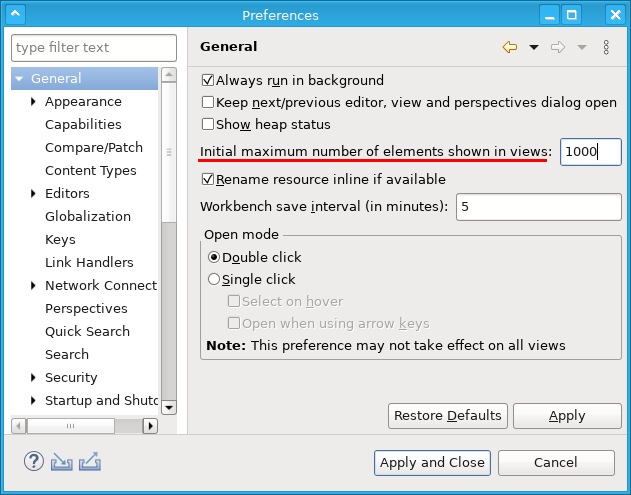
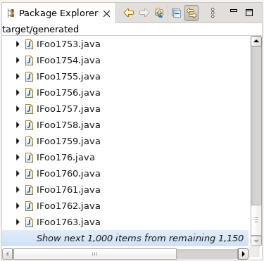
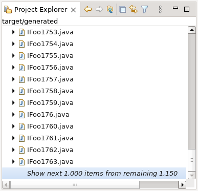
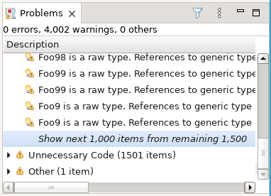
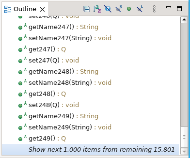
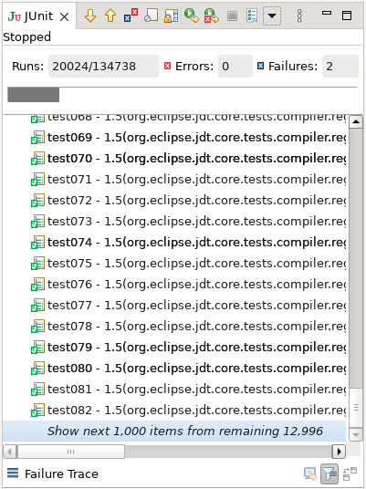
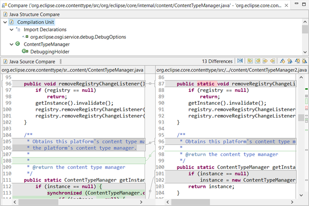
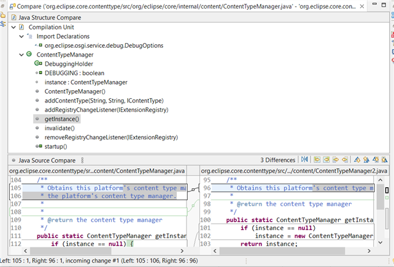

Views, Dialogs and Toolbar |
|
| Viewer Limit in Workbench |
Few most commonly used Eclipse views have enabled incremental view updates.
These views will limit initially shown number of children to 1000 per parent element, and allow displaying next
batch of elements if requested. This increment number can be configured in the
 Note, that also other (3rd party) views can read the preference and enable this feature, but that must be explicitly done for each view. Incremental view updates feature was added to avoid UI freezes in large viewers, where SWT/JFace hit the limits of the underlying native widget machinery while trying to render thousands of elements, leading to minute long UI freezes. Incremental view update feature is currently enabled in the following views:
    
This new preference can be disabled in products by specifying
|
Text Editors |
|
| Compare Editor |
The number of differences between two files are shown on the toolbar of compare editor which matches the change markers shown next to the scroll bar in compare editor. This feature is helpful when the files compared are large and have many differences that cannot be counted manually.  The number of differences change based on the selection in the compilation unit of Java Structure Compare.  |
Preferences |
|
Themes and Styling |
|
General Updates |
|
| Eclipse launcher reloads configuration files on restart |
Previously when Eclipse was restarted using
Now the Eclipse launcher is enhanced to reload the configuration files on restart,
so any changes to the |
| New 'wires' command in the OSGi console |
Before it was quite hard to find out if/why a certain bundle is using some other bundles or are used by others. There is now a new 'wires' command that when executed against a given bundle prints all wires that are used by the bundle and any wires it provides to other bundles. This results in a very powerful tool to analyze dependency problems and find out why a bundle is actually used. Example if you open Host OSGi console:
WARNING: This console is connected to the current running instance of Eclipse!
____________________________
Welcome to Apache Felix Gogo
g! ss org.eclipse.ui.workbench
id State Bundle
5018 ACTIVE org.eclipse.ui.workbench_3.131.100
g! wires 5018
Bundle org.eclipse.ui.workbench 3.131.100:
is wired to:
- com.ibm.icu 74.1.0
- because of Import-Package: com.ibm.icu.util
- jakarta.annotation-api 2.1.1
- because of Import-Package: jakarta.annotation; version="[2.1.0,3.0.0)"
- jakarta.inject.jakarta.inject-api 2.0.1
- because of Import-Package: jakarta.inject; version="[2.0.0,3.0.0)"
- org.apache.felix.scr 2.2.6
- because of Require-Capability: osgi.extender; filter:="(&(osgi.extender=osgi.component)(version>=1.2)(!(version>=2.0)))"
- org.eclipse.core.databinding.observable 1.13.200
- because of Require-Bundle: org.eclipse.core.databinding.observable; bundle-version="[1.2.0,2.0.0)"
- org.eclipse.core.databinding.property 1.10.200
- because of Require-Bundle: org.eclipse.core.databinding.property; bundle-version="[1.2.0,2.0.0)"
- org.eclipse.core.runtime 3.31.0
- because of Require-Bundle: org.eclipse.core.runtime; bundle-version="[3.29.0,4.0.0)"
- org.eclipse.e4.core.commands 1.1.300
- because of Import-Package: org.eclipse.e4.core.commands
- because of Import-Package: org.eclipse.e4.core.commands.internal
- org.eclipse.e4.core.contexts 1.12.500
- because of Require-Bundle: org.eclipse.e4.core.contexts; bundle-version="1.0.0"
- org.eclipse.e4.core.di 1.9.300
- because of Require-Bundle: org.eclipse.e4.core.di; bundle-version="1.1.0"
- org.eclipse.e4.core.di.extensions 0.18.200
- because of Require-Bundle: org.eclipse.e4.core.di.extensions; bundle-version="0.13.0"
- org.eclipse.e4.core.services 2.4.300
- because of Require-Bundle: org.eclipse.e4.core.services; bundle-version="2.2.0"
- org.eclipse.e4.ui.bindings 0.14.300
- because of Require-Bundle: org.eclipse.e4.ui.bindings; bundle-version="0.9.0"
- org.eclipse.e4.ui.css.swt 0.15.300
- because of Require-Bundle: org.eclipse.e4.ui.css.swt; bundle-version="0.9.1"
- org.eclipse.e4.ui.css.swt.theme 0.14.300
- because of Require-Bundle: org.eclipse.e4.ui.css.swt.theme; bundle-version="0.9.0"
- org.eclipse.e4.ui.di 1.5.300
- because of Require-Bundle: org.eclipse.e4.ui.di; bundle-version="0.9.0"
- org.eclipse.e4.ui.model.workbench 2.4.200
- because of Require-Bundle: org.eclipse.e4.ui.model.workbench; bundle-version="0.9.1"
- org.eclipse.e4.ui.services 1.6.300
- because of Import-Package: org.eclipse.e4.ui.services
- because of Require-Bundle: org.eclipse.e4.ui.services; bundle-version="1.3.0"
- org.eclipse.e4.ui.workbench 1.15.300
- because of Import-Package: org.eclipse.e4.ui.internal.workbench
- because of Import-Package: org.eclipse.e4.ui.internal.workbench.addons
- because of Import-Package: org.eclipse.e4.ui.workbench
- because of Import-Package: org.eclipse.e4.ui.workbench.modeling
- org.eclipse.e4.ui.workbench.addons.swt 1.5.300
- because of Require-Bundle: org.eclipse.e4.ui.workbench.addons.swt; bundle-version="0.10.0"
- org.eclipse.e4.ui.workbench.renderers.swt 0.16.300
- because of Import-Package: org.eclipse.e4.ui.internal.workbench.renderers.swt
- because of Import-Package: org.eclipse.e4.ui.workbench.renderers.swt
- org.eclipse.e4.ui.workbench.swt 0.17.300
- because of Import-Package: org.eclipse.e4.ui.internal.workbench.swt
- because of Require-Bundle: org.eclipse.e4.ui.workbench.swt; bundle-version="0.9.1"
- org.eclipse.e4.ui.workbench3 0.17.300
- because of Require-Bundle: org.eclipse.e4.ui.workbench3; bundle-version="0.15.0"; visibility:="reexport"
- org.eclipse.emf.ecore.xmi 2.37.0
- because of Require-Bundle: org.eclipse.emf.ecore.xmi; bundle-version="2.11.0"
- org.eclipse.help 3.10.300
- because of Require-Bundle: org.eclipse.help; bundle-version="[3.2.0,4.0.0)"
- org.eclipse.jface 3.33.0
- because of Require-Bundle: org.eclipse.jface; bundle-version="[3.31.0,4.0.0)"
- org.eclipse.jface.databinding 1.15.200
- because of Require-Bundle: org.eclipse.jface.databinding; bundle-version="[1.3.0,2.0.0)"
- org.eclipse.osgi 3.19.0
- because of Import-Package: javax.xml.parsers
- because of Import-Package: org.w3c.dom
- because of Import-Package: org.xml.sax
- because of Require-Capability: osgi.ee; filter:="(&(osgi.ee=JavaSE)(version=17))"
- org.osgi.service.event 1.4.1.202109301733
- because of Import-Package: org.osgi.service.event; version="[1.2.0,2.0.0)"
and is consumed by:
- org.eclipse.jdt.ui 3.31.100
- because it Require-Bundle: org.eclipse.ui.workbench; bundle-version="[3.131.0,4.0.0)"
- org.eclipse.ui 3.205.100
- because it Require-Bundle: org.eclipse.ui.workbench; bundle-version="[3.130.0,4.0.0)"; visibility:="reexport"
- org.eclipse.ui.editors 3.17.200
- because it Require-Bundle: org.eclipse.ui.workbench; bundle-version="[3.130.0,4.0.0)"
- org.eclipse.ui.genericeditor 1.3.300
- because it Require-Bundle: org.eclipse.ui.workbench; bundle-version="3.109.0"
- org.eclipse.ui.intro.quicklinks 1.2.300
- because it Require-Bundle: org.eclipse.ui.workbench; bundle-version="3.108.0"
|